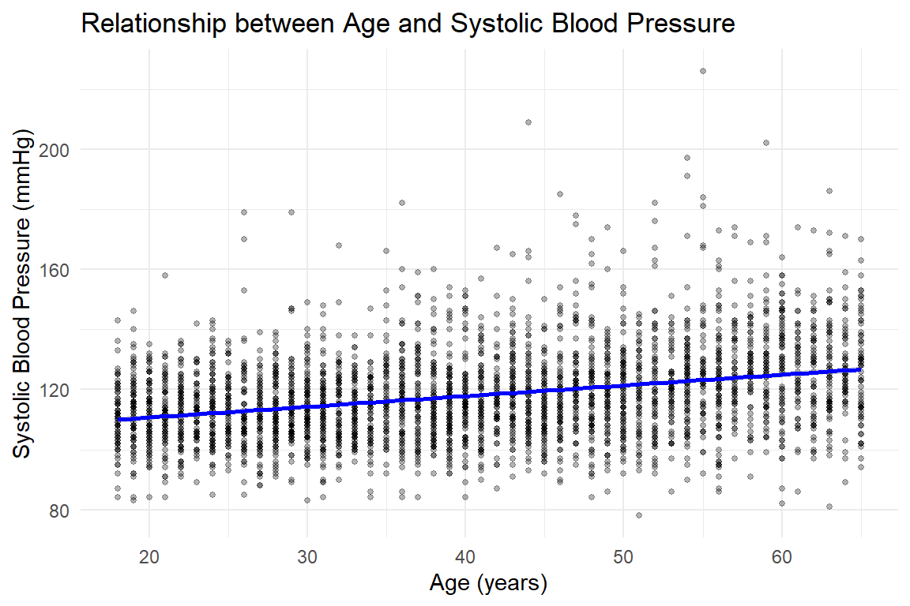
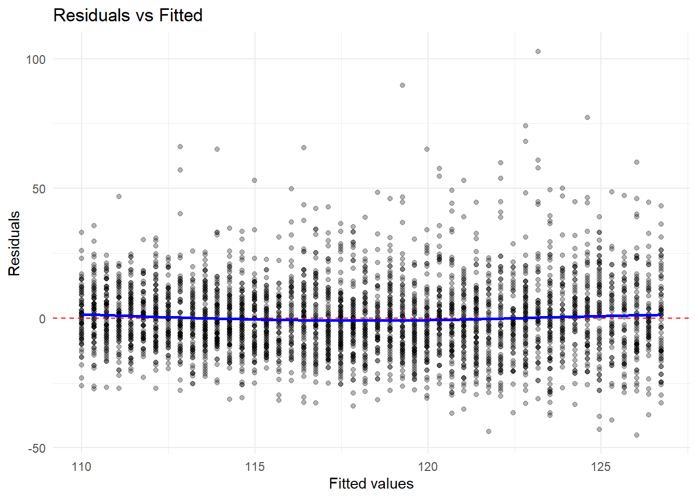
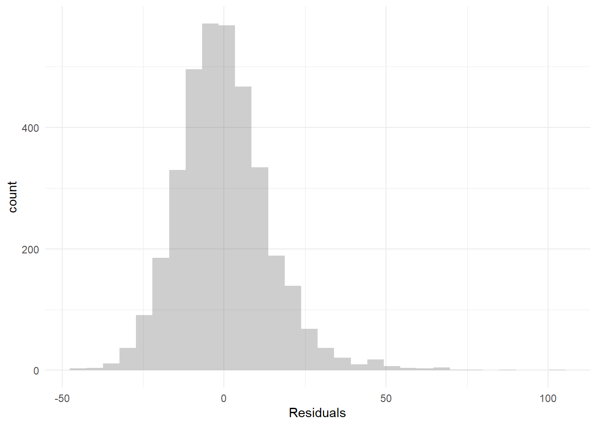

This exercise uses NHANES (National Health and Nutrition Examination Survey) data to explore relationships between health variables. Complete all questions, showing your code, output, and interpretations where requested.
# Load required packageslibrary(NHANES)library(tidyverse)library(car)library(GGally)library(tidyverse)library(broom)library(kableExtra)# Load and prepare datadata(NHANES)# Create a clean subset for analysisnhanes_clean <- NHANES |>filter(Age >=18, Age <=65) |># Adults onlyselect(Age, Gender, BMI, BPSysAve, BPDiaAve, DirectChol, TotChol, Diabetes, PhysActive) |>na.omit() |>distinct()# Preview datahead(nhanes_clean)
# A tibble: 6 × 9
Age Gender BMI BPSysAve BPDiaAve DirectChol TotChol Diabetes PhysActive
<int> <fct> <dbl> <int> <int> <dbl> <dbl> <fct> <fct>
1 34 male 32.2 113 85 1.29 3.49 No No
2 49 female 30.6 112 75 1.16 6.7 No No
3 45 female 27.2 118 64 2.12 5.82 No Yes
4 58 male 23.7 104 74 0.96 4.24 No Yes
5 54 male 26.0 134 85 1.16 6.41 No Yes
6 58 female 26.2 127 83 1.14 4.78 No Yes
Exercise 1: Correlation Analysis
We want to explore the relationship between systolic blood pressure (BPSysAve) and age.
(a)
Calculate the Pearson correlation coefficient between systolic blood pressure and age. Interpret the value including direction and strength.
Interpretation: The Pearson correlation coefficient is 0.321, indicating a moderate positive linear relationship between systolic blood pressure and age. As age increases, systolic blood pressure tends to increase.
(b)
Calculate the Spearman correlation coefficient for the same variables. How does it differ from the Pearson correlation? When might Spearman be preferred?
Interpretation: The Spearman correlation coefficient is 0.32, which is similar to the Pearson correlation. Spearman correlation measures monotonic (not necessarily linear) relationships and is based on ranks rather than raw values. It is preferred when: (1) the relationship is monotonic but not linear or (2) data contain outliers that would affect Pearson. In this case, both correlations are similar, suggesting the relationship is approximately linear.
(c)
Create a scatterplot with a fitted line to visualize this relationship.
ggplot(nhanes_clean, aes(x = Age, y = BPSysAve)) +geom_point(alpha =0.3, size =1) +geom_smooth(method ="lm", color ="blue", se =TRUE) +labs(title ="Relationship between Age and Systolic Blood Pressure",x ="Age (years)",y ="Systolic Blood Pressure (mmHg)") +theme_minimal()
`geom_smooth()` using formula = 'y ~ x'

Slight positive trend, matches the correlations from (a) and (b).
Exercise 2: Simple Linear Regression
In this exercise, you will fit a simple linear regression model predicting systolic blood pressure from age.
(a)
Write out the mathematical model for this regression, clearly defining all terms. (Use LaTeX here. Knowing how to write something in LaTeX won’t be on the exam, but knowing how to write out a model in symbols will be.)
\(\text{BPSysAve}_i\) = systolic blood pressure for person \(i\)
\(\beta_0\) = intercept (expected BP when age = 0)
\(\beta_1\) = slope (change in BP per 1-year increase in age)
\(\text{Age}_i\) = age for person \(i\)
\(\epsilon_i\) = residual error for person \(i\), assumed \(\epsilon_i \sim N(0, \sigma^2)\) independently
(b)
Fit the model in R and display the summary output using tidy() and kable().
model1 <-lm(BPSysAve ~ Age, data = nhanes_clean)tidy(model1) |>kable(digits =3)
term
estimate
std.error
statistic
p.value
(Intercept)
103.596
0.749
138.390
0
Age
0.356
0.018
20.325
0
(c)
Interpret the slope coefficient. What does the p-value for age tell us? State the null and alternative hypotheses being tested.
Interpretation: The slope coefficient for Age is 0.356, meaning that for each additional year of age, systolic blood pressure increases by approximately 0.356 mmHg, on average.
The p-value tests: - \(H_0: \beta_1 = 0\) (no linear relationship between age and BP) - \(H_A: \beta_1 \neq 0\) (there is a linear relationship)
The p-value is < 0.001, so we reject the null hypothesis and conclude there is strong evidence of a linear relationship between age and systolic blood pressure. The test statistic follows a t-distribution with \(n-2 = 3600\) degrees of freedom.
Exercise 3: Model Assumptions
In the following exercise, we’ll check all four assumptions of linear regression for the model from Question 2.
(a)
Create diagnostic plots to check: (1) Linearity, (2) Normality of residuals, (3) Homoscedasticity, (4) Independence
model1_diag <-augment(model1)# 1. Residuals vs Fitted (Linearity + Homoscedasticity)p1 <-ggplot(model1_diag, aes(x = .fitted, y = .resid)) +geom_point(alpha =0.3) +geom_hline(yintercept =0, color ="red", linetype ="dashed") +geom_smooth(se =FALSE, color ="blue") +labs(title ="Residuals vs Fitted",x ="Fitted values",y ="Residuals") +theme_minimal()# 2. Histogram of Residuals (Normality)p2 <-ggplot(model1_diag, aes(x = .resid)) +geom_histogram(alpha =0.3) +labs(x ="Residuals") +theme_minimal()p1
`geom_smooth()` using method = 'gam' and formula = 'y ~ s(x, bs = "cs")'

p2
`stat_bin()` using `bins = 30`. Pick better value `binwidth`.

(b)
For each assumption, state whether it appears to be met or violated based on your plots. Explain your reasoning.
Assessment: 1. Linearity: The Residuals vs Fitted plot shows a relatively random scatter around zero with no clear pattern, suggesting the linearity assumption is reasonably met. The relationship between age and BP appears to be approximately linear.
Normality: The Q-Q plot shows that residuals mostly follow the diagonal line, with slight deviations in the tails. The histogram shows an approximately normal distribution with slight right skew. Overall, the normality assumption is reasonably satisfied for inference purposes.
Homoscedasticity (constant variance): The fitted vs. residuals plot shows a relatively horizontal line with roughly equal spread of residuals across fitted values. There might be slightly more variance at higher fitted values, but the assumption appears adequately met.
Independence: We cannot fully assess independence from these plots alone. However, there’s no obvious pattern in the Residuals vs Fitted plot suggesting dependence. Since each observation is a different person and we’ve removed duplicates, independence is likely satisfied. If observations were collected over time or in clusters, we’d need to investigate further.
Exercise 4: Multiple Linear Regression
In this question, we’ll fit a multiple linear regression model predicting systolic blood pressure from age, BMI, and gender.
(a)
Fit the model and display the estimated coefficients using tidy() and kable(). Round to 3 digits.
model2 <-lm(BPSysAve ~ Age + BMI + Gender, data = nhanes_clean)tidy(model2) |>kable(digits =3)
term
estimate
std.error
statistic
p.value
(Intercept)
90.456
1.147
78.866
0
Age
0.331
0.017
19.636
0
BMI
0.374
0.033
11.465
0
Gendermale
6.644
0.455
14.592
0
(b)
Interpret each coefficient in the model. How does the interpretation of the age coefficient differ from Question 3?
Age (0.331): For each 1-unit increase in BMI, systolic BP increases by 0.331 mmHg, holding BMI and gender constant. The change is that this intepretation is holding BMI and gender constant - or could also say this is the difference adjusted for BMI and gender.
BMI (0.374): For each 1-unit increase in BMI, systolic BP increases by 0.374 mmHg, holding age and gender constant.
Gender (6.644): Males on average have a systolic BP that is 6.644 mmHg higher than females, holding age and BMI constant.
(c)
What is the \(R^2\) and adjusted \(R^2\)? Interpret the adjusted \(R^2\). Why might we prefer adjusted \(R^2\) versus regular \(R^2\)?
17.9% of the variation in systolic blood pressure is explained by age, BMI, and gender in our model.
The adjusted \(R^2\) adjusts for the number of predictors in the model, penalizing for adding variables that don’t improve the model. It’s useful for comparing models with different numbers of predictors.
(d)
What is the F-statistic testing? State the null and alternative hypotheses. Interpret the p-value.
F_stat <-summary(model2)$fstatisticF_stat
value numdf dendf
261.6774 3.0000 3598.0000
Interpretation: The global F-test tests:
\(H_0\): All coefficients except the intercept are zero (\(\beta_1 = \beta_2 = \beta_3 = 0\))
\(H_A\): At least one coefficient is non-zero (at least one nonzero linear association between a predictor and the outcome.)
The F-statistic follows an F-distribution with 3 and 3602- 4 = 3598 degrees of freedom (df1 = number of predictors = 3, df2 = n - number of parameters = n - 4).
The p-value is < 0.001, so we reject the null hypothesis and conclude that our model with age, BMI, and gender provides significantly better predictions than a model with only an intercept. At least one predictor is significantly related to systolic BP.
(e)
Predict the systolic blood pressure for a 45-year-old male with BMI of 28. (First create a new data frame, then use the predict() function.) Write a 1-sentence conclusion about the predicted value.
BPSysAve ~ Age + BMI + Gender
BPSysAve ~ Age + BMI + Gender
new_obs <-data.frame(Age =45,BMI =28,Gender ="male")# Predicted value with confidence intervalpredict(model2, newdata = new_obs)
We’d expect the blood pressure to be around 122.48 mmHg.
(f)
You were concerned there might be differences in the association between BMI and systolic blood pressure by gender. Run the test with the interaction term for gender and BMI.
model3 <-lm(BPSysAve ~ Age + BMI + Gender + BMI*Gender, data = nhanes_clean)tidy(model3) |>kable(digits =3)
term
estimate
std.error
statistic
p.value
(Intercept)
88.912
1.356
65.572
0.000
Age
0.332
0.017
19.698
0.000
BMI
0.426
0.041
10.478
0.000
Gendermale
10.784
1.995
5.407
0.000
BMI:Gendermale
-0.144
0.067
-2.132
0.033
Given the interaction term is in the model, what is the estimated change in systolic blood pressure corresponding to a 1 kg/m2 increase in BMI. Note that the estimated change will depend on an individuals gender
So for someone with BMI of 0, we expect the change in SBP of 0.332 mmHg corresponding to a 1 kg/m2 increase in BMI
We could also assume a 1 kg/m2 increase in BMI is associated with a 0.332 + (-1.44)*(Gender = male) mmHg increase in systolic blood pressure
Based on the results from this model do you think there is evidence of a difference in the association by gender (assume \(\alpha=0.05\) Why or why not?
With a p-value of 0.03, for the interaction term, at an alpha = 0.05, we reject the null hypothesis that the association between BMI and SBP does not differ by gender.